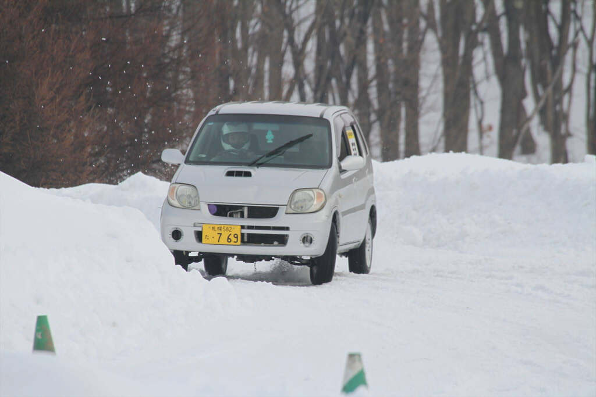

- 2025年に友人から奪い取った納車
- もともとBターボと聞いていたが0.6までしかブーストかからず？となっていたら青いインジェクターを見つけて60psであることが判明orz
ほぼほぼビンボーチューンです
| エアクリ | アプガレで1500円で買ったわけわからんやづ |
|---|---|
| 点火レジスタ | 8.5番くらいの抵抗をつけてる(ハイオク仕様) |
| 脚まわり | 夏: MF21S MRワゴン純正脚+TEINかどっかのダウンサス, 冬: ヌケヌケの純正脚 |
| タイヤ(冬) | BRIDGESTONE 卍VRX3 155/65R14卍 |
| アーシング | 純正アーシングポイントにお気持ち程度に1本追加 |